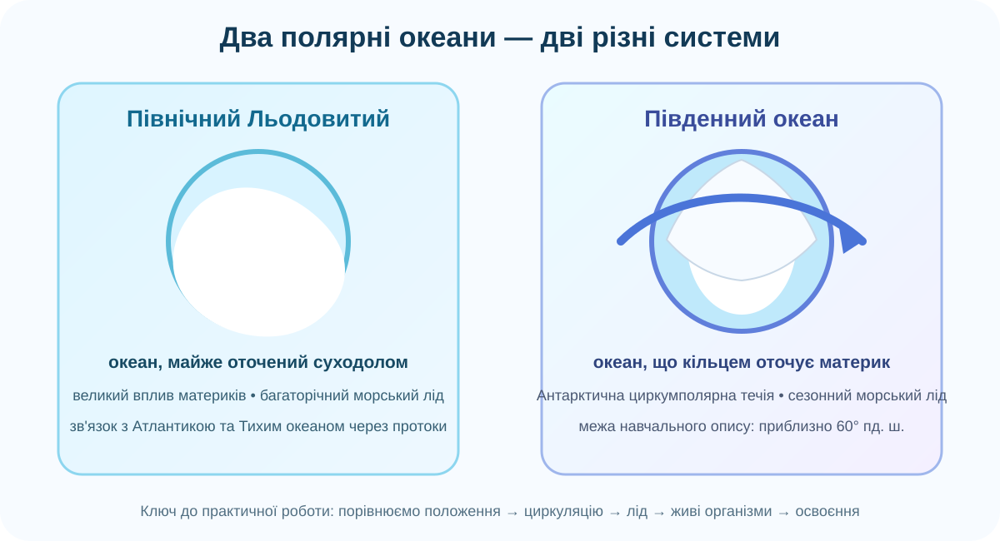

Що Ви маєте з’ясувати
Чому Південний океан доцільно виділяти як окремий океан і чим він принципово відрізняється від Північного Льодовитого, хоча обидва лежать у полярних широтах.
Розподіл 10 балів
Де закінчуються Атлантичний, Індійський і Тихий океани?
NOAA використовує визначення Південного океану як морської області, що оточує Антарктиду південніше 60° пд. ш.. Проведіть уявну паралель 60° пд. ш. і поясніть, чому така межа зручна для картографування.

Практичне питання: Північний Льодовитий океан майже замкнений материками. Південний — навпаки, кільцем оточує материк. Як ця різниця може впливати на течії?
Порівняйте два полярні океани
| Ознака | Північний Льодовитий | Південний |
|---|---|---|
| Положення відносно материків | ||
| Морський лід | ||
| Головна циркуляція | ||
| Вплив суходолу | ||
| Найсильніша відмінність | ||
Чому полярний лід поводиться по-різному?
Спостереження NASA
Антарктичний морський лід здебільшого сезонний: взимку сильно розширюється, влітку різко відступає. На його рух впливають вітри, рельєф Антарктиди, температура поверхні океану та будова морського дна.
Виберіть найсильніший доказ
Оберіть доказ, який пояснює механізм, а не просто описує картинку.
Антарктична пустеля ≠ суцільний лід
Антарктична пустеля
Пустеля визначається насамперед малою кількістю опадів, а не спекою. Тому внутрішня Антарктида — холодна пустеля.
Антарктичний оазис
Це ділянка без суцільного льодового покриву, де оголюються породи, виникають водойми, локальні ґрунти й мікрооселища.
BAS / SCAR карта АнтарктикиВаш доказ
Складіть лоцію Південного океану
Уявіть, що Ви готуєте коротку навігаційно-наукову пам’ятку. Позначте не менше чотирьох пунктів, які треба врахувати експедиції.
Сучасна карта SCAR Antarctic Digital Database охоплює Антарктику до 60° пд. ш. і містить берегову лінію, контури, виходи порід та інші топографічні дані.
CER: чи виправдано виділяти Південний океан окремо?
Ваш результат
Виконайте етапи й збережіть кожен. Сторінка підсумує набрані бали.
Самоперевірка не замінює перевірку вчителя: бал підтверджується якістю Ваших аргументів.
Домашнє завдання
Обов’язково
За підручником повторіть тему Південного океану й складіть міні-повідомлення на 5–7 речень: «Який один природний процес найбільше відрізняє Південний океан від Північного Льодовитого?»
Електронна бібліотека ІМЗОЗа бажанням
Зробіть один слайд або мінібуклет про тварину Південного океану. Не просто фото + назва: додайте одну адаптацію до холоду, одну ланку живлення і одну екологічну загрозу.